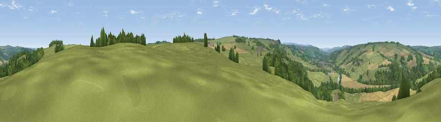

Viewpoint near Haydon Bridge
#24106 in England · top 61% of its area beats it · near Haydon Bridge · access?Where it is
The exact computed spot (NY 86825 64575). Click the marker for map links.
Public access: no public right of way or access land is recorded at this exact spot — it may be on private land. Computed from Natural England's CRoW access layer and OpenStreetMap rights of way — not the legal definitive map. Always verify locally.
The view, rendered

A 360° render of this exact spot computed from the terrain model, tree cover and land cover — summer colours, afternoon light, calibrated against photographs of famous viewpoints. Real trees, hedges and buildings will differ in detail.
The panorama
Grey silhouette: terrain skyline in each direction (720 bearings, Earth curvature and refraction included). Dashed green: skyline with trees (+15 m) and buildings (+8 m) as obstacles. Blue strip: how far the ground is visible on each bearing.
Where the view opens
Wedge length = distance to the farthest visible ground on that bearing (vegetation-aware). Rings at 10, 25 and 50 km.
What fills the view
63% grassland · 22% woodland · 15% cropland ·
Angular shares of the visible panorama (visual magnitude), not map area. Landscape diversity 0.42 (0–1 Shannon).
Key numbers
More beautiful places nearby
The staircase of upgrades: each row has a higher view potential than everything closer. Driving times are estimates from straight-line distance, calibrated against real road routing — check an actual route before setting out.
| Place | Direction | Drive | Score |
|---|---|---|---|
| Viewpoint near Warden | E · 3 km | ~7 min | 49.3 |
| Viewpoint near Haydon Bridge | WNW · 3 km | ~8 min | 58.4 |
| Viewpoint near Haydon Bridge | NW · 3 km | ~8 min | 61.5 |
| Viewpoint near Fourstones | NE · 5 km | ~11 min | 71.4 |
| Viewpoint near Allenheads | SSW · 20 km | ~34 min | 74.6 |
| Grey Nag | SW · 26 km | ~42 min | 75.7 |
| Viewpoint near Castle Carrock | WSW · 30 km | ~47 min | 76.9 |
| Viewpoint near Renwick | SW · 30 km | ~47 min | 77.0 |
54.97561, -2.20736 · source: screening · position refined by local search. Computed location — check access rights before visiting.